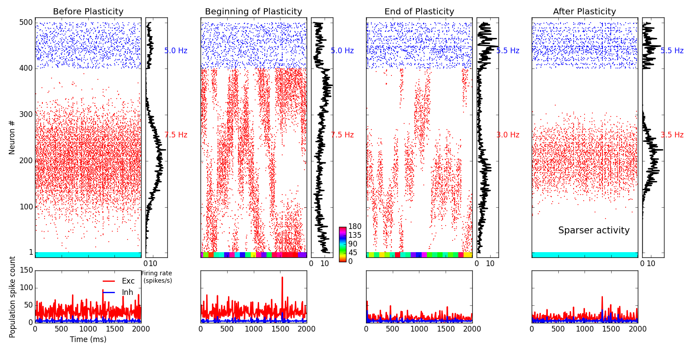
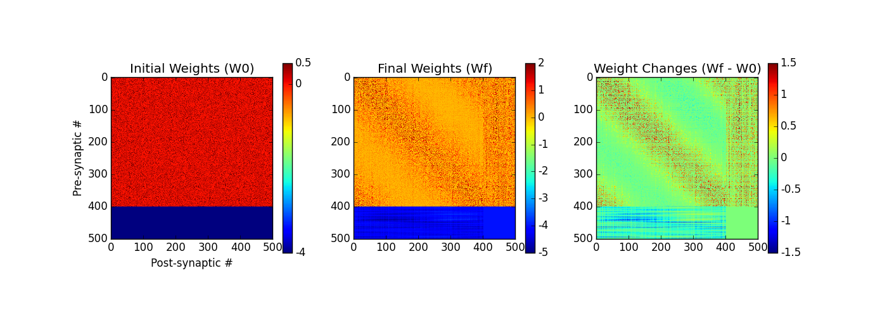
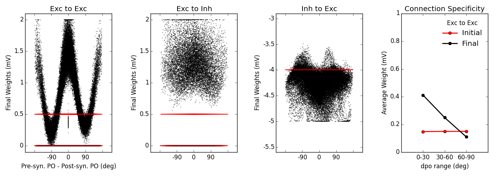

# *** general description Simulating and analysing plastic recurrent networks as in: [1] Sadeh, Clopath and Rotter. Emergence of Functional Specificity in Balanced Networks with Synaptic Plasticity. PLOS Computational Biology 2015. # *** list of files (1) network_simulator.py Simulates a network of integrate-and-fire neurons with plastic synapses using Exact Integration (2) params.py Default set of parameters in (Table 1 of) [1] (3) network_run.py Uses network_simulator.py and runs a simulation of a plastic recurrent network. (4) plot_figures.py Reads the results from network_run.py and plots Figures 1 and 3 in [1] # *** to simulate the network and plot the figure(s): First run (3): simulates the network and saves the results; then run (4): reads the results and plots Figures 1 (top below) and 3 (2 bottom below):    # ***